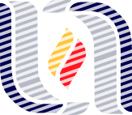
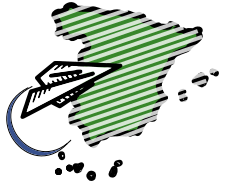

Nací en Aguascalientes, México en 1983,sin embargo debido al trabajo de mi padre, vivi los primeros 4 años en México, D.F., para después nuevamente regresar a tierras hidrocálidas
Desde que empecé a manejar mi primera PC, una 486 de IBM me interesó la computación, por lo que al llegar a la universidad, estudié la Ingenieria en Sistemas Computacionales. Mi alma mater, como se puede suponer, es la Universidad Autónoma de Aguascalientes. Estuve dentro de los primeros 10 lugares a nivel nacional en el Examen General de Egreso de la Licenciatura
Empecé mi carrera profesional al inicio de la universidad en una pequeña empresa de servicios de IT a PyME sin retribución monetaria, ya que lo que me interesaba era adquirir experiencia profesional. Después de 2 años y medio decidí lanzarme a la aventura como Freelance y monté un pequeño negocio de Servicios IT para pequeñas y medianas empresas
Soluciones Digitales era el nombre comercial que utilizaba ante mis clientes. Fue una época en la que aprendí bastante sobre el trato con clientes y el diseño de soluciones a sus problemas relacionados con IT. Los servicios que ofrecía iban desde diseño y configuración de redes LAN, mantenimiento de equipos, configuración de servidores, así como la venta de Software de Terceros y Licenciamiento OEM..
Tengo que confesar que mis horas de dormir en dicha época eran pocas, ya que durante la mañana atendia a mis clientes, en la tarde asistía a la Universidad y por la noche regresaba para realizar trabajo y entregar a mis clientes al día siguiente. Aunque el negocio iba bien, 1 año antes de terminar la carrera universitaria tenía en mente salir de México para estudiar un master en Ingenieria de Software
Con el objetivo de hacer un máster fuera de México, por lo que empecé a buscar universidades donde realizar dicho master. La elegida fue la Universidad de Southampton en UK. Sin embargo el presupuesto necesario se escapaba un poco de mis manos, por lo que empecé a buscar formas para poder llegar ahi.
Un dia por azares del destino me topé con un anuncio de una empresa consultora en IT en Aguascalientes, en el cual se anunciaba la creación de un equipo Java que se desplazaría a Madrid, España. Aún recuerdo, como al hacer la entrevista, el personal de RH se sorprendia de que tuviera una empresa y de que quisiera entrar a esta empresa con un salario de practicante, además de que los integrantes del equipo serían seleccionados a partir de un grupo de 30 que estaba recibiendo una formación desde hace 1 mes. Mi posición en dicho momento era por un objetivo mayor y por las posibilidades de "saltar el charco" y acercarme a UK
Entré en el curso y dí lo mejor de mí. Fui seleccionado para ir a Madrid, España y el 2 de Febrero de 2007 volé al antiguo continente.Al llegar a España, daría comienzo una nueva etapa de mi vida, descubrí mi pasión por viajar y conocer nuevas culturas. Formaría mi "familia" en Madrid con varios de los que fuimos desde Aguascalientes más gente que conocí allá.
Tomé la decisión de realizar el master de Ingenieria de Software en Madrid en la Universidad Pontificia de Salamanca, sobre todo por la facilidad geográfica y por la flexibilidad de trabajar y estudiar a la vez. En dicha época conocería a un grupo de amigos, que son geniales y estimo mucho, con los cuales sigo manteniendo el contacto
Mi etapa en Madrid, estuvo llena de varios proyectos interesantes, que hicieron que me especializará en SOA, procesos de Negocio y aplicaciones J2EE. Fui poco a poco tomando más responsabilidad para pasar desde un programador Junior hasta Jefe de Proyecto
En cuanto al aspecto laboral, siempre doy mi mejor versión. Tal fue el caso, que en uno de los proyectos en los que participé surgió la oportunidad de regresar a México con trabajo en Enero de 2015, casi 9 años después de haber emigrado de México. Yo tenía que quitarme de la cabeza la incógnita de regresar a mi tierra natal, así que lo hice. Me di cuenta que mi lugar era fuera de México, aunque mi familia sigue viviendo en Aguascalientes y la quiero demasiado. Mi felicidad no estaba ahi.
Regresé a Madrid en Agosto de 2015 para incoporarme nuevamente al mercado laboral. Esta vez me incliné por participar en un proyecto con Metodología Agiles. Desde entonces he aprendido bastante y lo sigo haciendo.Un año despúes, se presentaría una nueva oportunidad laboral que me llevaria esta vez más al este de Europa
Actualmente radico en Alemania desde Noviembre 2016 con mi esposa Olga, a quien conocí en uno de mis viajes. Aqui sigo contagiando a todo el que pueda sobre las metodologías Agiles. Estoy en un proyecto como Scrum Master...